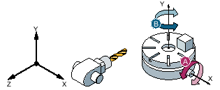

Example 2: Horizontal machine - no rotary axis rotates in the basic position around the tool axis
-
Machine kinematics with swivel table.
-
1st rotary axis (A) in the swivel table rotates around machine axis X.
-
Angular range, rotary axis 1 (A) from -90 degrees to +90 degrees.
-
-
2nd rotary axis (B) in the swivel table rotates around machine axis Y.
-
Angular range, rotary axis 2 (B) from 0 degrees to 360 degrees (modulo 360).
-
-
Machine manufacturer has set the direction reference to rotary axis 1 (A) when he commissioned the swivel function.
-
In the swivel cycle, a rotation (ZYX) is programmed through Y=30 degrees.
Basic position
Basic position of the kinematics (B = 0 degrees, A = 0 degrees)
Direction "+" (plus)
Rotary axis B moves to +30 degrees in the positive direction.
Rotary axis A moves to 90 degrees.

Direction "-" (minus)
Rotary axis B moves to 210 degrees (30 degrees - 180 degrees = -150 degrees = 210 degrees).
Rotary axis A moves to 90 degrees.
The two "Minus" or "Plus" direction settings enable a workpiece to be machined with swiveled planes. The two solutions calculated by the NC differ by 180 degrees (see rotary axis B).
In this case, the "Plus" solution corresponds to the solution without additional rotation in the Actframe (180° in Z).